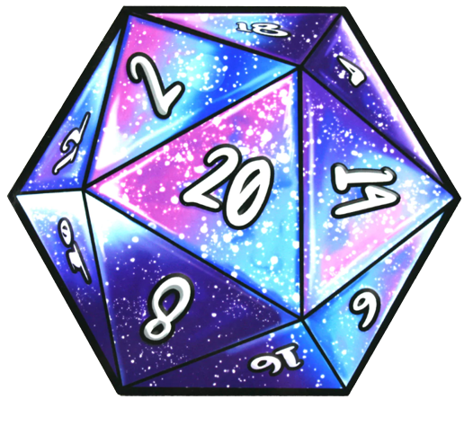
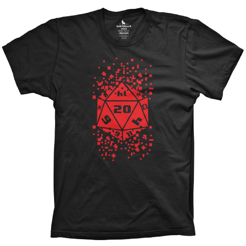

El dado de 20 caras es un icosaedro regular, lo que significa que es un poliedro de veinte caras, con triángulos equilateros congruentes y convexos. La cara inscrita con la cifra más baja (1) es la cara opuesta a la cara inscrita con la cifra más elevada (20), de tal manera que la suma de los números en caras opuestas será 21. Habitualmente es empleado en la típica tirada de habilidad para determinar el éxito o fracaso de la misma. Se hizo famoso gracias al juego de rol Dragones y Mazmorras. Según este juego, los personajes tienen modificadores que expresan sus habilidades. Lanzando el dado de veinte y sumando el resultado a su modificador el jugador consigue la acción que su personaje quería llevar a cabo.
El d20 es el "dado del rol" debido a su uso tan extendido en el juego Dungeons and Dragons. Todo el merchandising que encontramos sobre el rol tiene como protagonista éste dado.
Iván Casado Álvarez